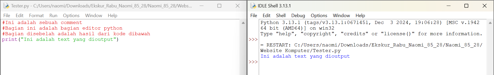
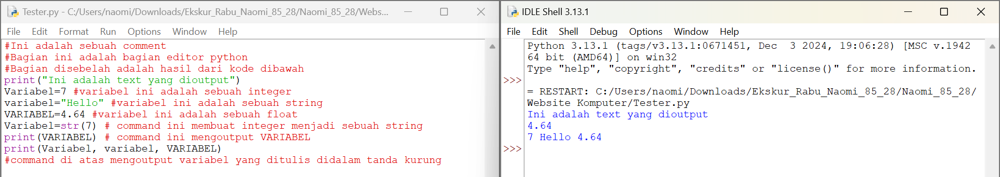

Python merupakan sebuah bahasa programing yang dirilis pada 1991 oleh Guido van Rossum. Python merupakan programming yang cocok bagi pemula karena python bertujuan untuk menjadi bahasa programming yang gampang dimengerti dan lebih sederhana daripada bahasa pemrograman yang lain.
Pada Python, sebuah command hanya perlu dipisahkan dengan barisan yang baru dan command yang dilaksanakan pada kondisi tersebut diberi indent (spasi tambahan) didalam kondisi tersebut. Pada Python, kita mengoutput sesuatu dengan menggunakan print(). Kita bisa membuat sebuah comment yaitu baris kode yang tidak keluar dengan mengetik # pada awal baris.
Contoh command print dan sebuah comment pada Python:

Pada Python tidak ada command untuk membuat variabel dan kita hanya perlu memberikan variabel tersbut sebuah sebuah nilai. Tipe data sebuah variabel tidak perlu ditentukan dan bisa diganti kapan saja pada saat membuat kode. Nama dari sebuah variabel case-sensitive yang berarti variabel "var" dan "Var" merupakan variabel yang berbeda. Nama variabel hanya boleh menggunakan huruf, angka, dan underscore (_) dan tidak boleh dimulai oleh angka. Pada python tipe data text disimpan pada str (string), data bilangan bulat disimpan pada int (integer), data bilangan desimal adalah float, data yang menyatakan true or false bool (boolean). Untuk mengoutput sebuah variabel tinggal membuat command print(nama_variabel) dan jika ingin mengoutput lebih dari satu variabel bisa menggunakan print(nama_variabel1, nama_variabel2).
Dibawah ini adalah contoh penggunaan variabel di Python:

Pada python, cara menyimpan user input yang paling gampang adalah dengan menggunakan variabel. Pertama kita akan membuat sebuah variabel dan membuat input sebagai nilai variabel tersebut. Disebelah input buatlah tanda kurung dan buat text yang akan ditunjukkan untuk mengisi input tersebut.
Contoh User input pada Python:
Pada python, percabangan harus dimulai dengan command if dengan menulis if, kondisi yang ingin diperiksa diketik di dalam tanda kurung dan barisan diakhiri dengan tanda colon (:). Untuk menulis command yang dilaksanakan jika command benar, maka mulai barisan baru, dan beri sebuah indent, setelah itu tulis command yang ingin dilakukan. Command elif digunakan untuk memeriksa sesuatu dengan kondisi yang berbeda tetapi tidak memenuhi kondisi if pertama. Command elif ditulis dengan cara yang sama dengan comand if dengan syarat harus ada kondisi if sebelumnya. Command else digunakan jika sesuatu tidak memenuhi kondisi pada semua if dan elif yang terhubung. Command else ditulis dengan cara yang sama tetapi tidak memiliki sebuah kondisi dan tidak boleh diikuti dengan kondisi if dan elif selanjutnya.
Berikut ini adalah contoh percabangan di python:
While loop merupakan sebuah perulangan yang terjadi selama sebuah kondisi masih terpenuhi. Penulisan while loop sama dengan penulisan if.
Contoh while loop: